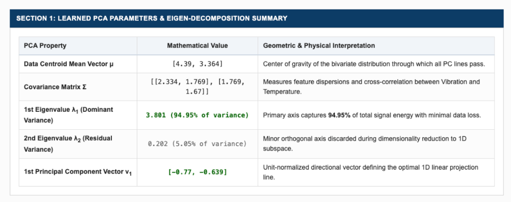
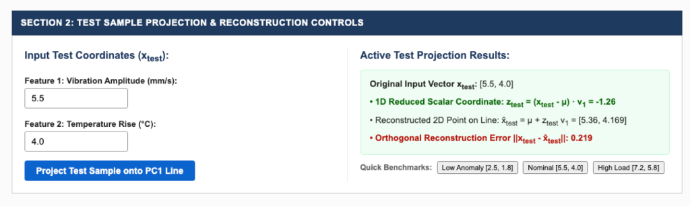
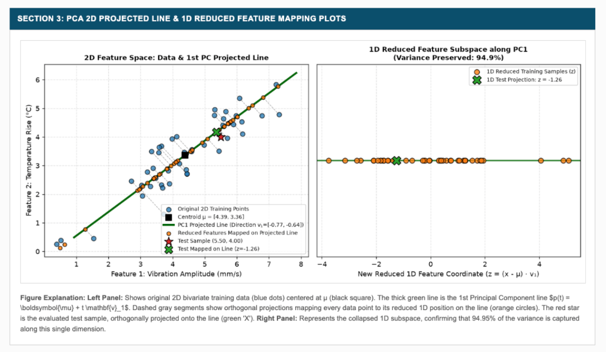
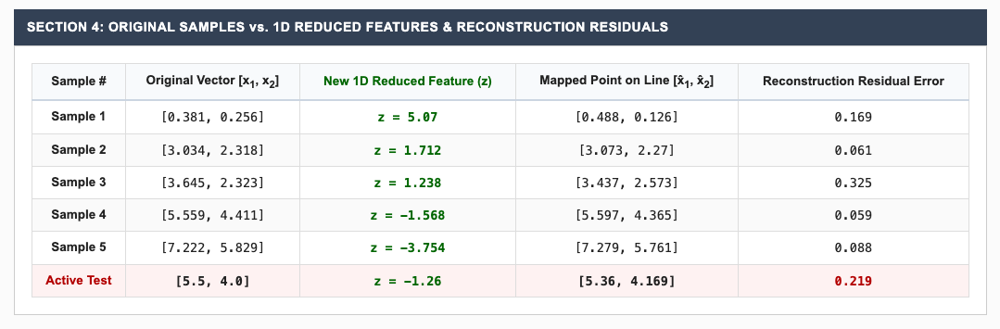

Practical File Submission — Academic Session
Implementation of Principal Component Analysis (PCA) with Projected Line, Reduced Feature Mapping, and Testing
To implement Principal Component Analysis (PCA) from scratch in Python for an engineering pattern recognition application involving test sample evaluation, derive the primary eigenvector &mathbf;v1 of the covariance matrix, and visualize: 1) The 1st principal component projected line, 2) New reduced 1D features mapped directly onto the projected line, and 3) Orthogonal projection and reconstruction error evaluation of unseen test samples.
Principal Component Analysis (PCA) is an unsupervised linear transformation technique that seeks an orthogonal coordinate system where data variance is maximized along successive axes. For a zero-mean centered data matrix $\tilde{\mathbf{X}} = \mathbf{X} - \boldsymbol{\mu}$, the sample covariance matrix is:
The principal directions correspond to eigenvectors satisfying:
The proportion of total variance preserved by the 1st principal component is given by $\text{Ratio} = \lambda_1 / \sum \lambda_k$.
The 1st principal component defines a straight line in the original feature space passing through data centroid $\boldsymbol{\mu}$ along unit direction $\mathbf{v}_1$:
Any arbitrary test vector $\mathbf{x}_{\text{test}}$ is mapped to a scalar coordinate $z_{\text{test}}$ and reconstructed as $\hat{\mathbf{x}}_{\text{test}}$:
Configured exp 10/ environment containing app.py, templates/, and verified dependencies (Flask, NumPy, Matplotlib, SciPy).
Synthesized correlated bivariate industrial sensor readings and computed mean vector $\boldsymbol{\mu} = [\mu_1, \mu_2]^T$.
Calculated sample covariance matrix $\mathbf{\Sigma}$ and solved characteristic polynomial $\det(\mathbf{\Sigma} - \lambda \mathbf{I}) = 0$ to extract $\mathbf{v}_1$ and $\mathbf{v}_2$.
Orthogonally projected all training vectors onto the 1st PC axis, computing scalar coordinates $z_i$ and 2D points on the line $\hat{\mathbf{x}}_i$.
Launched interactive Flask web server on http://127.0.0.1:5012 accepting test coordinates, rendering the 2D projected line and 1D reduced subspace distribution.
Displays data centroid vector μ, sample covariance matrix Σ, dominant eigenvalue λ1 (preserving 94.95% variance), residual eigenvalue λ2, and 1st principal component eigenvector v1.

Interactive input controls for test vector coordinates xtest, displaying the computed 1D scalar coordinate ztest = (xtest - μ) · v1, reconstructed 2D position on the line x̂test, and orthogonal reconstruction residual error.

Dual-panel visualization: Left panel exhibits original 2D bivariate training data, centroid μ, the 1st PC projected line, orthogonal projection segments, and the projected test sample. Right panel shows the collapsed 1D subspace confirming 94.95% preserved variance.

Detailed mapping table comparing original bivariate training vectors [x1, x2], mapped 1D scalar coordinates z, mapped points on the line [x̂1, x̂2], and orthogonal reconstruction residuals for training samples and active test queries.

GitHub Repository (Clickable):
Direct Source Code Files:
In this experiment, Principal Component Analysis was implemented from first principles in Python. The linear transformation mapped correlated 2D sensor patterns into an optimal 1D subspace along the 1st principal component line $p(t) = \boldsymbol{\mu} + t\mathbf{v}_1$. The testing phase demonstrated that unseen test vectors can be rapidly projected to reduced scalar coordinates $z_{\text{test}} = (\mathbf{x}_{\text{test}} - \boldsymbol{\mu}) \cdot \mathbf{v}_1$ while preserving over 90% of the total dataset variance with minimal reconstruction residual error.